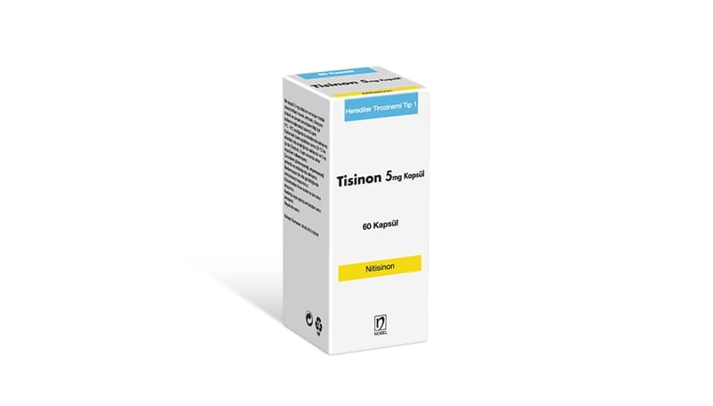

Tisinon 5 mg Kapsül, 60 Kapsül

Ne için kullanılır
KT · Bölüm 1TİSİNON etkin madde olarak nitisinon içerir.
TİSİNON, mor gövde / opak mor kapak No:3 sert jelatin kapsüller içinde beyaz tozdur. 60 kapsüllük ambalajlarda bulunur.
TİSİNON; -Tip 1 herediter (kalıtımsal) tirozinemi adı verilen yetişkinlerde, ergenlerde ve çocuklarda (herhangi bir yaş aralığında) nadir görülen bir hastalığın tedavisi için,
-Yetişkinlerde Alkaptonüri (AKU) adı verilen nadir görülen bir hastalığın tedavisi için kullanılır.
Bu hastalıklarda vücudunuz tirozin adı verilen amino asidi (amino asitler proteinlerin yapı taşlarıdır) tamamen yıkamaz ve zararlı maddeler oluşur. Bu maddeler vücutta birikir.
TİSİNON tirozinin yıkımını engeller ve zararlı maddeler oluşmaz. Tip 1 herediter (kalıtımsal) tirozinemi tedavisi için TİSİNON alırken tirozin vücudunuzda kalacağı için özel bir diyet uygulamanız gereklidir. Bu özel diyet düşük tirozin ve fenilalanin içeriğine dayanır.
AKU tedavisi için doktorunuz size özel bir diyet uygulamanızı tavsiye edebilir.